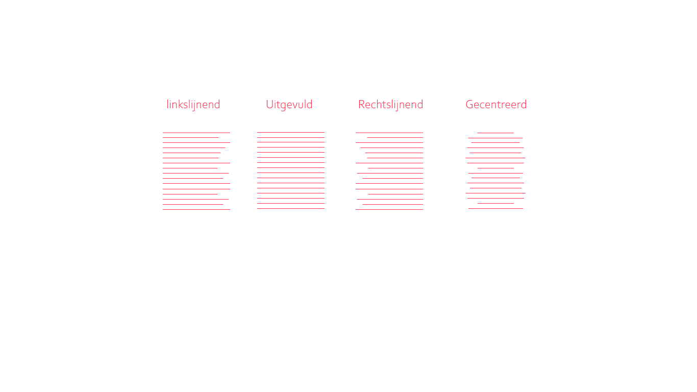

Een spatie is de horizontale tussenruimte tussen letters. De letterspatiëring wordt op de computer softwarematig, per letterhoogte (=corpsgrootte) aangepast. Een computer neemt echter geen nauwkeurig afgestemde beslissingen die een ontwerper wel neemt.
Als je letters te dicht op elkaar staan, elkaar bijna raken, moet het letterwit worden aangepast (afspatiëren). Als de letters te ver van elkaar af staan, gaan de individuele woorden verloren en wordt de tekst minder goed leesbaar.
B i j e e n t e g r o t e l e t t e r s p a t i e v a l l e n e r g a t e n i n d e w o or d e n.
grootsgedrukt.nl
Bij het zetten van tekst kan je kiezen uit verschillende manieren van regelverloop of regelval die mee het ritme van een pagina bepalen maar ook dikwijls de typografische stijl. Er zijn vier soorten regelval, dat wil zeggen dat de regels op 4 manieren in de zetspiegel kunnen zijn opgenomen:
